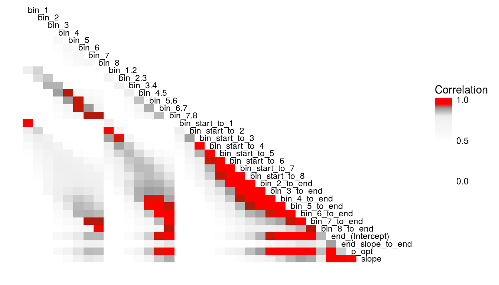
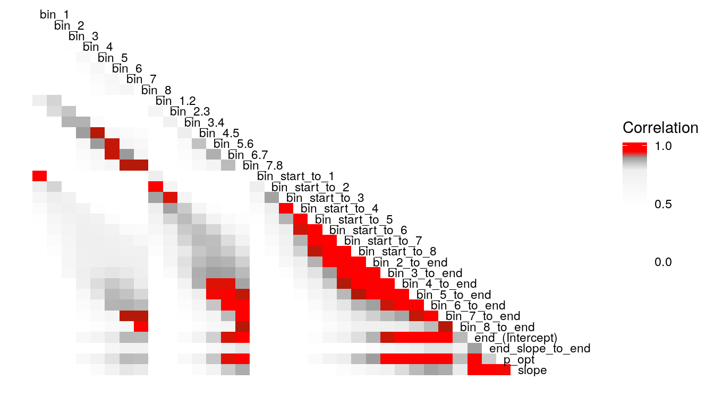
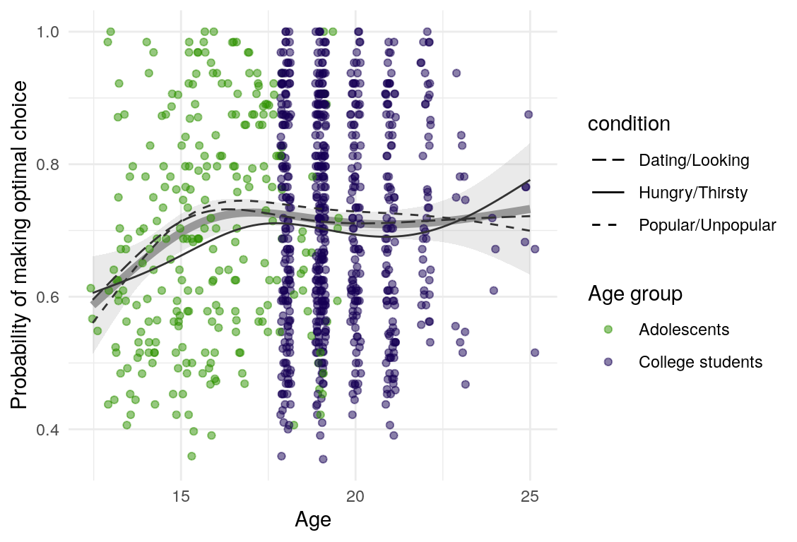
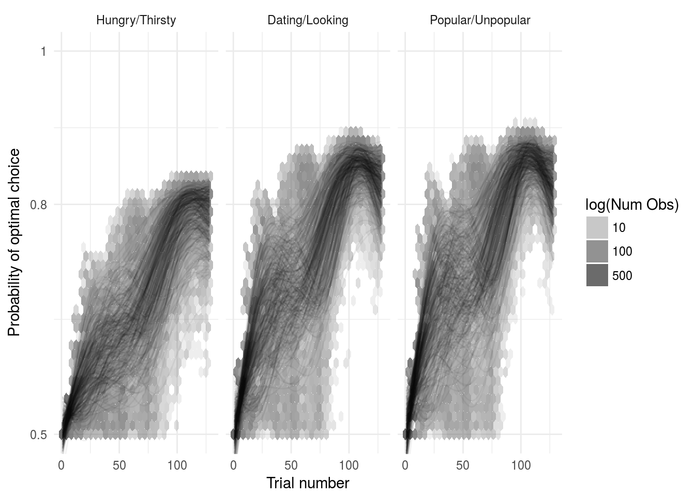

Fit model to participant data
John Flournoy
2018-05-11
fit-model-to-participant-data.RmdMethod
Using the model presented in the section on testing simulated data, I estimate the posterior distribution of the model parameters given the data provided by four groups of participants. Quality of estimation can be supported by (A), (B), (C), (D).
Results
Descriptive plots
Examination of the raw data using scatterplots and non-parametric best-fit lines can help insure that data conform to expectations, and that subsequent model estimates accurately reflect the data. On average, participants in all samples and all conditions demonstrated learning (Figure ??A, although note that given the small sample size, the foster-care involved sample shows more variability across trials). There is also some indication that learning occurs more quickly in the two social motive conditions (Figure ??B).


Participants also reported their confidence about which reponses would give them rewards most often (this single item measured confidence globally). Confidence generally increases aross trials for all samples (Figure 1).
Figure 1: Self-reported confidence over blocks.
Low-Fi
What’s the least sophisticated way I could possibly examine these data? Probably by taking the mean of some subset of the trials in each condition. So let’s do that and see how much stability there is across bins. since there are 128 trials per condition, I split this into bins of 16 trials each, for 8 bins total. I will also create overlapping double bins (e.g., bins 1 and 2, bins 2 and 3) increaslingly large bins starting from the beginning (e.g., combine bins 1 and 2, then bins 1-3), as well as starting from the end (bins 7 and 8, then bins 6-8). In this way, I hope to build up a picture for how much a summary of one subset of bins captures about the rest of the bins. I suspect that bins toward the end of the run will capture more information about the rest of the run than bins at the beginning of the run, as would be consistent with learning throughout the task.


Examining the above plots where corelations r > .90 are colored red (and r = .9 color black), it appears that the most wide ranging correlations are from bins that combine information during the latter half of the run in various ways. If one had to choose such a summary in these data, the average number of optimal presses from bin 5 through 8 (from trial 65 through trial 128) seems like a good candidate. It is highly correlated with average optimal responding from bin 6-end and 7-end, combined bins 5 & 6, combined bins 6 & 7, as well as the combined bins from start to finish (“bin_start_to_8”). Using the intercept from a logistic regression with the trial number predictor centered toward the end of the trial also captures a good deal of variance that corresponds to optimal responding on trials toward the end of the run.
Here are a few plots of these parameters agains age.

Results from logistic regression
#> Generalized linear mixed model fit by maximum likelihood (Laplace
#> Approximation) [glmerMod]
#> Family: binomial ( logit )
#> Formula: press_opt ~ 1 + (1 | id)
#> Data: splt
#>
#> AIC BIC logLik deviance df.resid
#> 141034.9 141054.3 -70515.5 141030.9 116704
#>
#> Scaled residuals:
#> Min 1Q Median 3Q Max
#> -3.2363 -1.1166 0.5409 0.7263 1.0859
#>
#> Random effects:
#> Groups Name Variance Std.Dev.
#> id (Intercept) 0.2929 0.5412
#> Number of obs: 116706, groups: id, 308
#>
#> Fixed effects:
#> Estimate Std. Error z value Pr(>|z|)
#> (Intercept) 0.79811 0.03149 25.35 <2e-16 ***
#> ---
#> Signif. codes: 0 '***' 0.001 '**' 0.01 '*' 0.05 '.' 0.1 ' ' 1
#> Generalized linear mixed model fit by maximum likelihood (Laplace
#> Approximation) [glmerMod]
#> Family: binomial ( logit )
#> Formula: press_opt ~ 1 + (1 | sample/id)
#> Data: splt
#>
#> AIC BIC logLik deviance df.resid
#> 141024.6 141053.6 -70509.3 141018.6 116703
#>
#> Scaled residuals:
#> Min 1Q Median 3Q Max
#> -3.2523 -1.1174 0.5386 0.7274 1.0865
#>
#> Random effects:
#> Groups Name Variance Std.Dev.
#> id:sample (Intercept) 0.27371 0.5232
#> sample (Intercept) 0.02302 0.1517
#> Number of obs: 116706, groups: id:sample, 308; sample, 4
#>
#> Fixed effects:
#> Estimate Std. Error z value Pr(>|z|)
#> (Intercept) 0.78396 0.08295 9.451 <2e-16 ***
#> ---
#> Signif. codes: 0 '***' 0.001 '**' 0.01 '*' 0.05 '.' 0.1 ' ' 1
#> Generalized linear mixed model fit by maximum likelihood (Laplace
#> Approximation) [glmerMod]
#> Family: binomial ( logit )
#> Formula: press_opt ~ 1 + (1 | sample/id) + (1 | stim_image)
#> Data: splt
#>
#> AIC BIC logLik deviance df.resid
#> 140572.2 140610.8 -70282.1 140564.2 116702
#>
#> Scaled residuals:
#> Min 1Q Median 3Q Max
#> -3.5014 -1.1146 0.5343 0.7173 1.2401
#>
#> Random effects:
#> Groups Name Variance Std.Dev.
#> id:sample (Intercept) 0.27594 0.5253
#> stim_image (Intercept) 0.02193 0.1481
#> sample (Intercept) 0.02588 0.1609
#> Number of obs: 116706, groups: id:sample, 308; stim_image, 6; sample, 4
#>
#> Fixed effects:
#> Estimate Std. Error z value Pr(>|z|)
#> (Intercept) 0.7862 0.1060 7.416 1.21e-13 ***
#> ---
#> Signif. codes: 0 '***' 0.001 '**' 0.01 '*' 0.05 '.' 0.1 ' ' 1
#> (Intercept)
#> 0.6895691
#> (Intercept)
#> 0.6865322
#> (Intercept)
#> 0.687019| Df | AIC | BIC | logLik | deviance | Chisq | Chi Df | Pr(>Chisq) | |
|---|---|---|---|---|---|---|---|---|
| check_stim_rx_null_id_only_m | 2 | 141034.9 | 141054.3 | -70515.47 | 141030.9 | |||
| check_stim_rx_null_m | 3 | 141024.6 | 141053.6 | -70509.32 | 141018.6 | 12.3136 | 1 | 4e-04 |
| check_stim_rx_null_stim_rx_m | 4 | 140572.2 | 140610.8 | -70282.08 | 140564.2 | 454.4771 | 1 | 0e+00 |
| Df | AIC | BIC | logLik | deviance | Chisq | Chi Df | Pr(>Chisq) | |
|---|---|---|---|---|---|---|---|---|
| null_lm | 4 | 140572.2 | 140610.8 | -70282.08 | 140564.2 | |||
| time_lm | 9 | 137966.5 | 138053.5 | -68974.27 | 137948.5 | 2615.626 | 5 | 0 |
| Df | AIC | BIC | logLik | deviance | Chisq | Chi Df | Pr(>Chisq) | |
|---|---|---|---|---|---|---|---|---|
| null_lm | 4 | 140572.2 | 140610.8 | -70282.08 | 140564.2 | |||
| condition_lm | 16 | 139442.8 | 139597.5 | -69705.39 | 139410.8 | 1153.378 | 12 | 0 |
Relation to FSMI subscales
| Scale | \(\omega_h\) | \(\omega_t\) | \(\alpha\) |
|---|---|---|---|
| FSMI mate-seeking | 0.88 | 0.89 | 0.88 |
| FSMI status | 0.72 | 0.72 | 0.71 |
| K-SRQ sexual relationships factor | —- | —- | 0.77 |
| K-SRQ admiration factor | —- | —- | 0.86 |
| K-SRQ sexual relationships scale | —- | —- | 0.76 |
| K-SRQ admiration scale | —- | —- | 0.86 |
| Dominance | 0.63 | 0.87 | 0.83 |
| Prestige | 0.57 | 0.86 | 0.81 |
| Sensation seeking | 0.59 | 0.87 | 0.81 |
In addition to confirmatory factor analyses, scale reliability and general-factor validity were assessed via the \(\omega_{h}\) and \(\omega_t\) statistics.
These statistics account for the possibility that variance on items is due to both a general latent factor common to all items, and several group fators that account for variance in subsets of items [@zinbarg2006].
The \(\omega_{h}\) statistic captures the proportion of variance due to a general factor, and so is proportional to the degree of expected correspondence between the scale and another measure of the construct (on a different scale, or at retest), and also indexes the validity of the scale as a measure of the ostensible latent construct.
The reliability of the whole scale is indexed by \(\omega_t\), which includes variance due to both group and general factors.
Cronebach’s \(\alpha\) is also reported because it is the default practice, and it may be helpful to demonstrate the differences between the two approaches.
All three statistics were calculated using the omega function in the psych package for R [@revelle2017].
The mate-seeking and status motive scales from the FSMI showed adequate reliability, with \(\alpha\) and \(\omega_t\) in the acceptable to excellent range according to some rules of thumb (Table ref(tab:fsmi_reliability). However, \(\omega_h\) indicates that only about 68% of the variance in FSMI Status and 80% of the variance in FSMI mate-seeking are due to the general factor. In light of this, any correlations of scale responses with other constructs of interest should be interpretted in light of the possibility that they are due, in part, to associations between variance not due to the general factor (and thus note due to the construct of interest). Of course, the variance due to other latent causes may also be a reason true relations are attentuated.

Results from Bayesian learning models


Model predicted behavior
Below is a plot of 313 model predicted runs, all using the exact same task structure (arbitrarily, the first run of the task). Behavior is guided by the mean parameter estimates, so any variabilility in behavior is due to the probabilistic nature of selecting either the right or left option based on the model’s current knowledge at some point during the task. Another way of framing this is that it is the behavior of the averge actor, in 313 identical, hypothetical runs.
